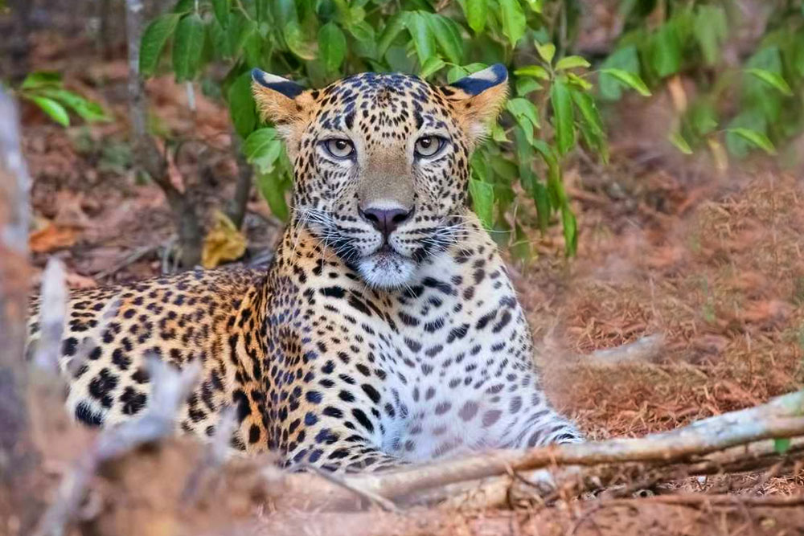
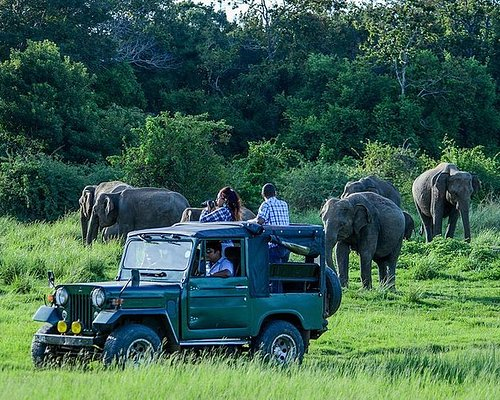
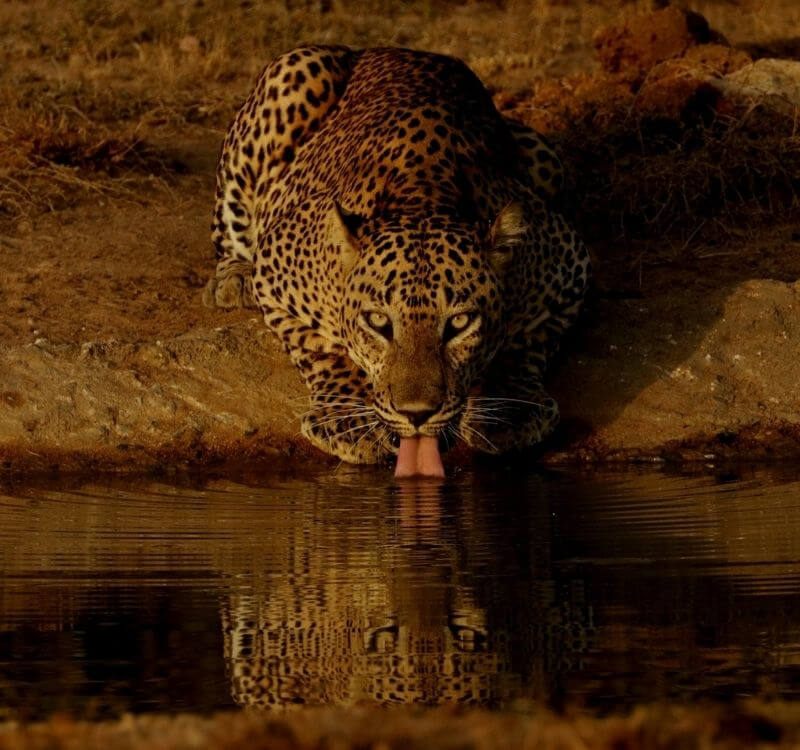
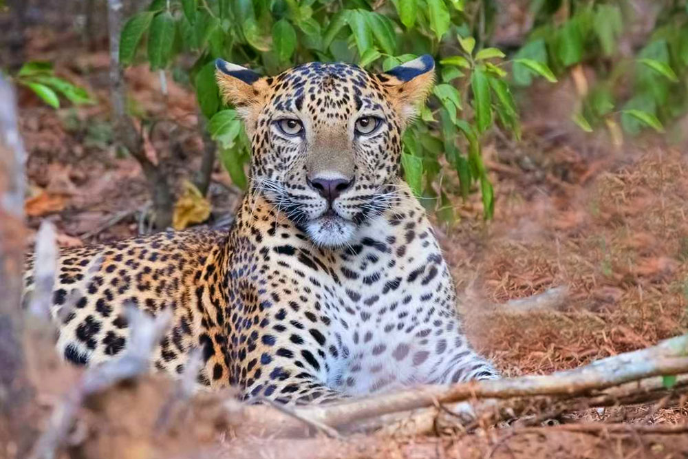
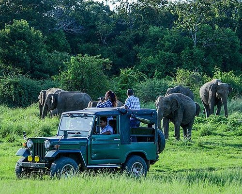
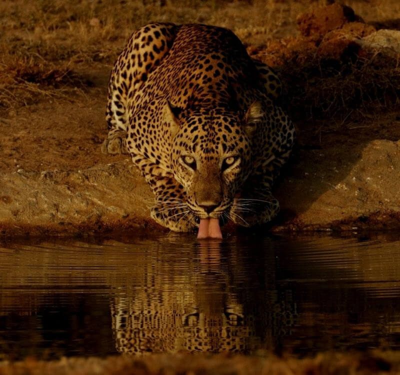

Department of wildlife conservation
Introduction to department of wildlife conservation
The Department of Wildlife Conservation in Sri Lanka is dedicated to the preservation and protection of the country's rich biodiversity. Established to safeguard diverse ecosystems, the department manages various national parks, wildlife sanctuaries, and nature reserves.
With a mission to balance conservation and sustainable development, the Department of Wildlife Conservation plays a pivotal role in wildlife management and environmental education. Through initiatives such as habitat restoration, anti-poaching efforts, and community engagement programs, the department strives to ensure the long-term survival of endemic species while fostering a harmonious coexistence between wildlife and local communities. Committed to the principles of biodiversity conservation, the department's work contributes to the overall well-being of Sri Lanka's natural heritage.
- Manages and protects iconic national parks like Yala and Wilpattu.
- Preserves critical ecosystems, including rainforests, wetlands, and marine areas.
- Conducts initiatives for wildlife conservation and environmental sustainability.
Protected areas by the department of wildlife conservation

 




